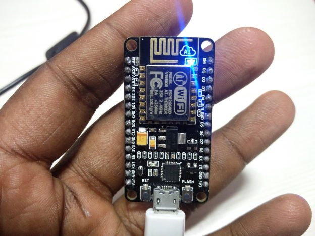
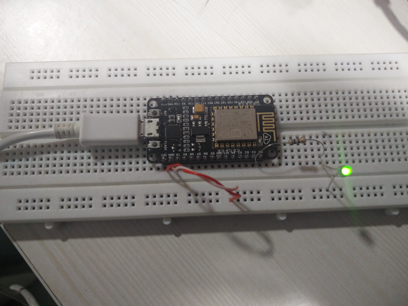

Archived note, written in 2016, while I was an open source hardware developer at ICFOSS. Tools and versions have moved on since.
NodeMCU
Node.js strip down for ESP8266
The course contains chapters on developing and IoT application on NodeMCU Dev Kit (Version 1.0 /V2) on a Linux PC.

Node MCU is an open source firmware for ESP8266 SOC based on eLua , a derivative of Lua for embedded hardware.The firmware will work on all ESP - X's ,limited only in terms of breakout for the SOC .It is an ultra low cost module with versions starting at around 3 Dollars (~220 Rs in India) and goes to 8 Dollars (~700 RS) for NodeMCU Dev Kit. The dev kit helps for starters as it has an onboard USB-UART (CP2102) and 3.3v Regulator.
NodeMCU can be considered as a very light weight OS with capabilities of handling the file system and run LUA scripts, a cross platform programming languge for embedded hardware.More details can be found from official Documentation Page
Chapters

Setting Up Node MCU
Details on Flashing the lastest firmware and lighting up an LED.

Hardware Introduction
NodeMCU Pinout , Setting Up ESPlorer and init.lua

Simple Web Server
Building a simple webserver using NodeMCU